阅读词表
| 词条 | 拼音 | 类型 | 说明 |
|---|---|---|---|
| 周公 | zhōu gōng | person | 周公旦，周初政治家。 |
| 孔子 | kǒng zǐ | person | 春秋时期思想家、教育家，儒家学派的重要奠基者。 |
| 易经 | yì jīng | text | 以六十四卦及卦爻辞为主体的古代经典。 |
| 尚书 | shàng shū | text | 保存上古政治文献和诰命的儒家经典。 |
| 春秋 | chūn qiū | text | 孔子时代相关的编年史经典。 |
| 六经 | liù jīng | text | 传统所称《诗》《书》《礼》《乐》《易》《春秋》。 |
| 象传 | xiàng zhuàn | text | 《易传》中解释卦象和爻象的篇章。 |
| 儒家 | rú jiā | concept | 以孔子思想及相关经典传统为核心的学派。 |
| 诗经 | shī jīng | text | 中国古代诗歌总集，儒家经典之一。 |
| 易传 | yì zhuàn | text | 解释《易经》的传文总称。 |
| 华夏文明 | huá xià wén míng | concept | 在中国早期历史中逐渐形成和发展的文明传统。 |
| 周易 | zhōu yì | text | 《易经》与后世《易传》合称的经典。 |
| 神权 | shén quán | concept | 以神灵或宗教权威支配社会政治生活的权力形态。 |
| 逸周书 | yì zhōu shū | text | 保存周代逸篇和历史材料的古书。 |
| 韦编三绝 | wéi biān sān jué | idiom | 形容反复研读典籍、十分勤奋。 |
| 彖传 | tuàn zhuàn | text | 《易传》中解释卦名与卦义的篇章。 |
| 忖度 | cǔn duó | rare_word | 估量、推测；“度”在这里读 duó。 |
| 佾 | yì | rare_word | 古代乐舞的行列；《八佾》为《论语》篇名。 |
| 服膺 | fú yīng | rare_word | 铭记在心并衷心信服。 |
| 诠释 | quán shì | rare_word | 解释并阐明意义。 |
| 神权退场 | shén quán tuì chǎng | concept | 宗教神权不再主导社会和政治生活。 |
| 贵族政治 | guì zú zhèng zhì | concept | 由世袭贵族掌握主要权力的政治形态。 |
| 三监之乱 | sān jiān zhī luàn | 项目词典 | 周初管叔、蔡叔等联合殷遗民叛乱。 |
| 口耳相传 | kǒu ěr xiāng chuán | 项目词典 | 通过口头代代传递。 |
| 殷商遗民 | yīn shāng yí mín | 项目词典 | 商朝灭亡后延续生活的商人群体。 |
| 甲骨卜辞 | jiǎ gǔ bǔ cí | 项目词典 | 商代刻写在甲骨上的占卜文字。 | 刻写在龟甲兽骨上的占卜文字。 | 刻写在甲骨上的占卜记录。 | 刻写在龟甲兽骨上的占卜辞句。 |
| 阿兹特克 | ā zī tè kè | 项目词典 | 古代中部美洲文明。 | 美洲古代文明，文中用于比较人祭。 | 中美洲古代文明，文中讨论其人祭。 |
| 伯邑考 | bó yì kǎo | 项目词典 | 文王长子。 |
| 卦爻辞 | guà yáo cí | 项目词典 | 《易经》中卦辞和爻辞的合称。 | 《易经》中解释卦、爻的辞句。 |
| 周文王 | zhōu wén wáng | 项目词典 | 周族领袖姬昌。 |
| 孔颖达 | kǒng yǐng dá | 项目词典 | 唐代经学家，《周易正义》编纂者之一。 |
| 上帝 | shàng dì | 项目词典 | 商周宗教中的最高神。 |
| 人牲 | rén shēng | 项目词典 | 被用于祭祀的人。 | 被用于祭祀或献祭的人。 | 被杀用于祭祀的人。 |
| 人祭 | rén jì | 项目词典 | 杀人用于祭祀的宗教行为。 | 以人作为祭品的祭祀行为。 | 杀人用于祭祀。 |
| 先后 | xiān hòu | 项目词典 | 《盘庚》引文中指已故先王。 |
| 分封 | fēn fēng | 项目词典 | 周初封邦建国制度。 |
| 卜辞 | bǔ cí | 项目词典 | 甲骨占卜后刻写或记录的辞句。 | 甲骨上记录占卜的文字。 | 占卜时刻写或记录的辞句。 |
| 卦辞 | guà cí | 项目词典 | 解释一卦吉凶和意义的文字。 |
| 卫国 | wèi guó | 项目词典 | 周初分封诸侯国。 |
| 后稷 | hòu jì | 项目词典 | 周族始祖传说中的农业神和祖先。 |
| 商王 | shāng wáng | 项目词典 | 商朝王。 |
| 夏桀 | xià jié | 项目词典 | 传说中的夏朝末代君主。 |
| 多方 | duō fāng | 项目词典 | 《尚书》篇名，周公告诫多方诸侯。 |
| 大过 | dà guò | 项目词典 | 《易经》卦名，文中列为自身对称的卦。 |
| 姜嫄 | jiāng yuán | 项目词典 | 周族始祖传说中的女性始祖。 | 周人始祖母，传说为有邰氏之女、后稷之母。 |
| 宋国 | sòng guó | 项目词典 | 周初分封商王族后裔之国。 |
| 崇国 | chóng guó | 项目词典 | 商周之际西土方国。 |
| 左传 | zuǒ zhuàn | 项目词典 | 春秋史传文献。 |
| 帝辛 | dì xīn | 项目词典 | 商纣王的王名。 |
| 成王 | chéng wáng | 项目词典 | 周成王，武王之子。 |
| 政体 | zhèng tǐ | 项目词典 | 政权组织和统治形态。 |
| 无逸 | wú yì | 项目词典 | 《尚书》篇名。 |
| 楚国 | chǔ guó | 项目词典 | 春秋战国南方大国。 |
| 武王 | wǔ wáng | 项目词典 | 周武王。 |
| 殷商 | yīn shāng | 项目词典 | 商朝后期文化和政权。 | 商代后期以殷墟为中心的商王朝阶段。 |
| 殷墟 | yīn xū | 项目词典 | 晚商都邑遗址，甲骨卜辞的重要出土地。 | 商代晚期都城遗址。 |
| 殷都 | yīn dū | 项目词典 | 商朝后期都城区域，今安阳殷墟一带。 | 商朝后期都城区域。 | 晚商都城，通常指安阳殷墟。 |
| 沦丧 | lún sàng | 项目词典 | 丧失、沦陷。 |
| 爻辞 | yáo cí | 项目词典 | 解释每一爻吉凶和意义的文字。 |
| 献祭 | xiàn jì | 项目词典 | 把祭品奉献给神灵或祖先。 | 向神灵、祖先等奉献祭品。 |
| 王权 | wáng quán | 项目词典 | 王的政治统治权力。 |
| 盘庚 | pán gēng | 项目词典 | 商王名，以迁都殷地著称。 |
| 纣王 | zhòu wáng | 项目词典 | 商朝末代王帝辛。 | 商末王，文中讨论其暴虐和人祭。 |
| 翦商 | jiǎn shāng | 项目词典 | 周人剪灭商朝的政治行动。 | 剪除商朝，文中为全书核心主题。 |
| 鲁国 | lǔ guó | 项目词典 | 周公后裔封国。 |
青铜器词表
| 器名 | 拼音 | 类型 | 说明 |
|---|---|---|---|
| 爵 | jué | bronze_item | 古代酒器，也引申为爵位。 |
章节导读札记
| 主题 | 札记 | 操作 |
|---|---|---|
| 暂无章节导读札记 | ||
用户札记
| 类型 | 页 | 内容 |
|---|---|---|
| 暂无用户札记 | ||
原书阅读器页 573原书物理 PDF 页 571印刷页 559
尾声：周公到孔子
〔按语：epilogue〕
自五千年前的仰韶文化晚期以来，黄河中下游静态的部落生活渐被战乱、征服和群体杀戮打破，华夏旧（早期）文明与国家由此产生。
从孕育到成熟，华夏旧文明跨越两千年。和同期的其他古代人类文明一样，它们都属于神权与王权合一、宗教主导的社会。如果一直延续下去，历史将充斥族群壁垒、杀戮与献祭。
但周灭商后，以杀戮和人祭为特色的华夏旧文明戛然而止，取代它的，是周公营造的新华夏文明。周公消灭了旧华夏文明及其相关记忆，打破了族群血缘壁垒，让尘世生活远离宗教和鬼神世界，不再把人类族群的差异看作神创的贵贱之别。这是华夏文明最彻底的一次自我否定与重生。
在三千年前的古人类文明中，只有华夏独自走出了神权的掌控，成为一个“异类”。这是一种过于早熟的世俗文明，一直持续到今日。
儒家起源与人祭文明
使华夏文明突然转向的根源，是周公一代人无法言说的恐惧，就像武王周发的惊梦。他们可能都在殷都生活过，不仅目睹了商人的血腥献祭，甚至兄长伯邑考的惨死。恐惧使武王更加依赖人祭宗教，而周公则极端憎恨人祭宗教，势必将其彻底灭绝。这是兄弟二人截然不同的解脱路径。
后世人对周公的认识，有事功和制度文化两方面：事功，主要是周公辅佐成王、平定三监之乱，为西周王朝奠定开局；制度文化，主要是周公“制礼作乐”，确立西周的政体，包括诸侯列国分封格局和贵族等级制度。在考古发现商朝的遗址与人祭文化之前，人们对周公的理解只能达到这种程度。
但事实上，周公最重要的工作是消灭商人的人祭宗教，以及与之配套的弱肉强食的宗教价值体系。他不仅阻止了周人模仿和继承这种宗教文化，也在殷商遗民和东夷族群中根除了它。尤其关键的是，周公还抹除了与商朝人祭有关的记忆，甚至也隐藏了自己禁绝人祭行为的种种举措。这是为防止人祭宗教的死灰复燃和卷土重来，也是为掩盖周人曾为商朝捕俘人牲的那段不光彩的历史。
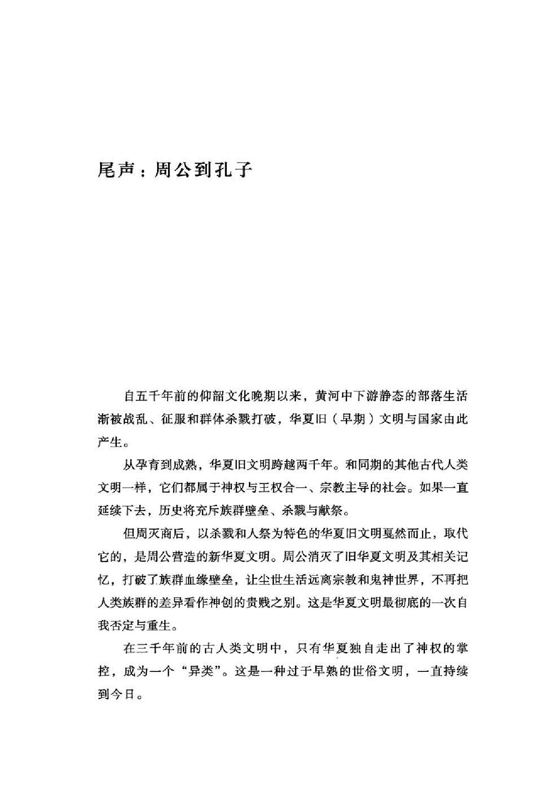
原书阅读器页 574原书物理 PDF 页 572印刷页 560
为了填补人祭宗教退场造成的真空，周公发展出了一套新的历史叙事、道德体系和宗教理念。这主要体现在《尚书》的几篇诰命中：
一，淡化商人对“帝”的崇拜。在商朝末期，“帝”已经和商王身份重叠，商王具有“帝”的神性。但周灭商后，王已经不能身兼“帝”之名号，对周人来说，帝在高高的天庭之上，不会化身为世间凡人。
虽然我们还不能完全确定这个原则就是由周公确立的，但从《尚书》的几篇诰命可以发现：在对殷商遗民讲话（如《多士》）时，周公会频频引用上帝的命令来威吓和诱导商人，这是因为商人格外信奉上帝，只能因势利导；但在对周族自己人讲话时，如册命弟弟周封为卫侯的三篇诰命，周公却极少谈到上帝，尤其是对族人谈论现实和规划未来时，他从不动用上帝进行论证，更不涉及其他的神灵。这显然是一种有意识地“敬而远之”，让现实和神界保持距离。从这些迹象看，周朝人“疏远”上帝或其他诸神的传统的确是由周公奠定的。
二，为减少神界对现实的干预，周公会尽量用“天”的概念来代替“帝' 因此，上帝发布的命令（“帝命”）变成了含糊的“天命”。
天命的观念在后来的中国一直存在，但人们已经忘记了它的缘起。[[fn:1]] “天”无形无像，无言无行，不容易被赋予拟人化的个性。在《诗经》里，上帝曾频频给文王下达命令，如命令文王攻打崇国，武王灭商据说也是来自上帝的意旨，但后世周王已经无法接收神界的具体指示，所以改称为“天命”后，它变成了一种更为抽象的、近乎隐喻的道德规训。
当然，周公时代还不可能有科学主义的无神论认知，神界即使被放置得比较远，也不会和王朝政治完全绝缘。比如，西周的王就被称为“天子”，也就是天的儿子，而这是连商代甲骨文也没有的词，但无论怎样，“天”还是过于含糊，周人及其以后的历代王朝从未给“天子”增加更具体的神性定义与功能。即便秦始皇使用“皇帝”尊号，其直观用意也是强调自己和六国之王的不同，虽有强调王者尊贵的这一层神性之意，但也使“帝”落入凡尘，并不比“天子”概念更神秘。
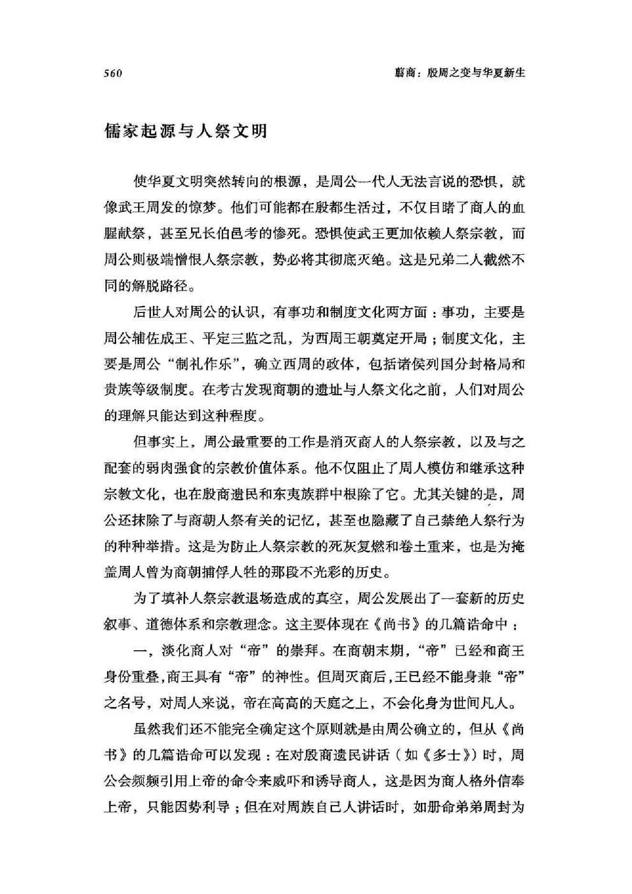
原书阅读器页 575原书物理 PDF 页 573印刷页 561
三，周公宣称，王者应当爱民、德治和勤勉，这样才会受到“天命”青睐，长寿享国；如果王者残暴对待庶民和小人，天命就会转移到更有德的候选君王身上，从而改朝换代。[[fn:2]]
本质上，周公的这样一种政治-道德体系是一种“性善论”的社会模型，回避了统治者对民众的征敛和暴力统治，认为王者的使命是护佑和教化万民，进而把道德伦理推进到一切人群中。[[fn:3]] 商朝人对此则是直言不讳，承认暴力的必要性。
按照周公的理论，夏商周都是根据“天命”建立和更迭的，夏朝和商朝的多数君王，特别是开国君王，勤政爱民，得到天佑，只是因为末代的夏桀和商纣道德沦丧，这才天命转移，改朝换代。经过周公改造，商朝残酷的人祭行为被隐去，由此，周人之前的暴力时代也成了和周朝同质的德治王朝。
和周公的理论相配套，周人还重新创造了一套上古圣王的历史，尧舜禹的温情禅让从此成为华夏世界的标准版历史叙事，更早版本的商人的“创世记”和上古史则被取代和湮没，未能流传下来。当然，也可能有某些与周公原则不太冲突的内容被纳入了周人的历史叙事，但这些已经不易分辨。
孔子和儒家最推崇周公，而周公思想是儒家文化的源头。周公思想的产生和形成，主要源于对人祭宗教的恐惧，以及消灭人祭宗教的需要。这是后人从未堪破的秘密。
周公构建世俗道德体系
对于宗教之于商周两朝的作用，以及之于人的影响，孔子曾有过一番颇不寻常的总结：
殷人尊神，率民以事神，先鬼而后礼，先罚而后赏，尊而不亲。其民之敝，荡而不静，胜而无耻。
周人尊礼尚施，事鬼敬神而远之，近人而忠焉，其赏罚，用爵列，亲而不尊。其民之敝，利而巧，文而不惭，贼而蔽。[[fn:4]]
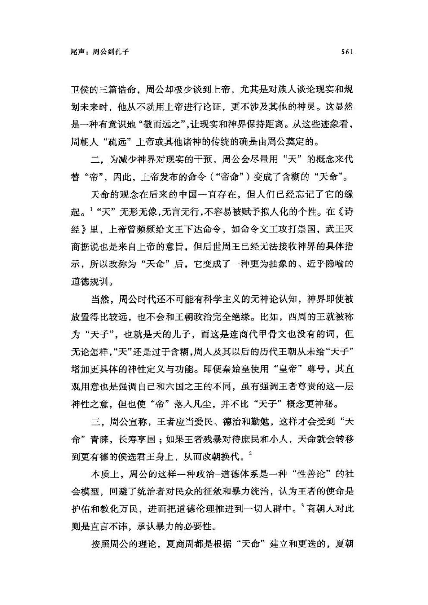
原书阅读器页 576原书物理 PDF 页 574印刷页 562
大意是说，殷商统治者尊崇神，要求民众必须敬神，对鬼神的重视程度超过正常礼俗，对民众的刑罚多于奖赏，多威严而缺少亲和力。这造成了民众性情躁动不安、争强好胜、缺少羞耻感的缺点。
周朝统治者则推崇世俗的礼仪，对民众比较宽容，虽然敬拜鬼神，但不让它们干预人间事务，更重视人间的世俗秩序和信用，人间的身份等级则依据爵位高低有所区别，有亲和力，但缺少威严。这造成了民众趋利且心计巧诈，善于掩饰欲望和自我包装，心中少有真诚，奸滑而有欺骗性的缺点。
孔子描绘的殷周之区别，在古代文献里可谓独家，不仅如此，现代考古学展示的商代文化和孔子的总结也非常一致。
因为周公掐断了神对人间的直接干预，这意味着华夏世界不会再有主导性宗教，以神的名义颁布的道德律条（如摩西十诫、佛家五戒）也无从产生，所以周人必须另行寻找一套用于世俗生活的道德原则。这种世俗道德的原理，是“推己及人”，也就是把自己放在他人的位置上考虑，从而决定自己对待他人的方式。
在《诗经•小雅》中有一首《巧言》：“秩秩大猷，圣人莫之。他人有心，予忖度之。”翻译为白话就是，世间的伟大秩序啊，是古代圣人规划的；别人心里怎么考虑的，我设身处地想一下也就知道了。
再到春秋晚期，孔子则用了一个字来定义人和人之间的道德标准，这便是“仁他的学生樊迟问他仁的含义，孔子曰：“爱人。”（《论语•颜渊》）而实现仁爱的方法，则是“恕”：“己所不欲，勿施于人。”（《论语•卫灵公》）人类的一切道德原则和行为规范，都可以从这八个字推导出来。所以，孔子从不教育学生们不许杀人，不许偷抢……因为这都已在“己所不欲，勿施于人”的原则里了。
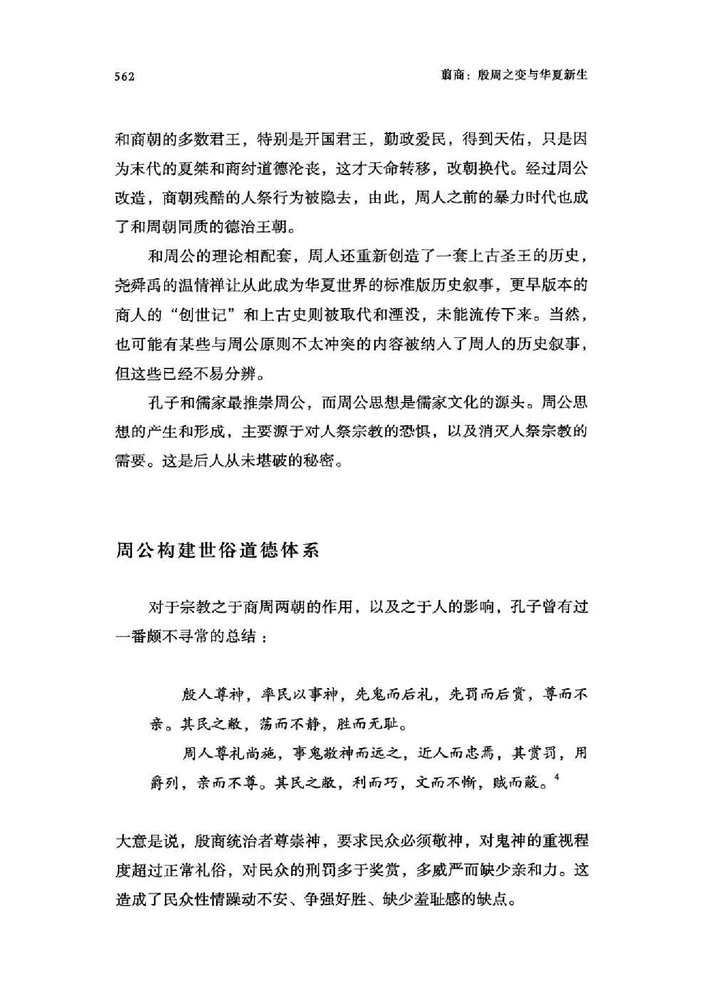
原书阅读器页 577原书物理 PDF 页 575印刷页 563
把他人等同于自己来对待，其实是人类固有的（但不是唯一的）一种思维和基本道德律，在宗教文化中，它可能会被教义遮蔽，却一直存在。
如何掩盖《易经》的本意
从周公到孔子，包含了西周和春秋，时间跨度五百年。我们很难断言，这五百年是否足以让华夏彻底忘却殷商时代的真相。
从今天往前倒推五百年，是16世纪初叶，明代中国的嘉靖年间；1521年，西班牙殖民军攻占阿兹特克帝国，中美洲曾经繁荣的人祭文明开始萧条，并迅速被欧洲的天主教取代。天主教会曾经系统性地摧毁中美洲人关于人祭宗教的抄本、神庙与记忆，但当时的殖民亲历者还是记录下了阿兹特克人祭的诸多细节，一直流传至今。
当然，周朝和最近五百年的世界有很多不可比之处。在没有经典文本叙事的前提下，零碎的、口耳相传的民间记忆很容易走样失真，以至消亡。上古能进行书写记录和传承的人很少，基本集中在“朝廷”生态圈内。周文王时代的一些真实片段之所以能够流传下来，是因为有文本记录，哪怕是在小范围人群中的，甚或长期无人问津的，也会有被再次发现的机会。
如前文所述，周公销毁了商朝诸多甲骨文记录，也禁止殷周贵族书写真实的历史。但周公唯一不敢销毁的，是文王留下的《易经》。这不仅是出于对父亲的尊重，也因为《易经》是周人对翦商事业（起步）的记录，里面很可能包含着父亲获得的天机，销毁它也就是对父亲和诸神的不敬。
周公的办法是对《易经》进行再解释，具体方法则是在文王创作的卦爻辞后面加上一段象传进行说明。象传不再鼓励任何投机和以下犯上的非分之想，全是君子应当如何朝乾夕惕，履行社会责任的励志说教，和文王卦爻辞的本意完全不同。[[fn:5]] 比如，乾卦的象传是“天行健，君子以自强不息”，坤卦的象传是“地势坤，君子以厚德载物”，远比文王卦爻辞清晰易懂，而且富于积极和励志的色调。
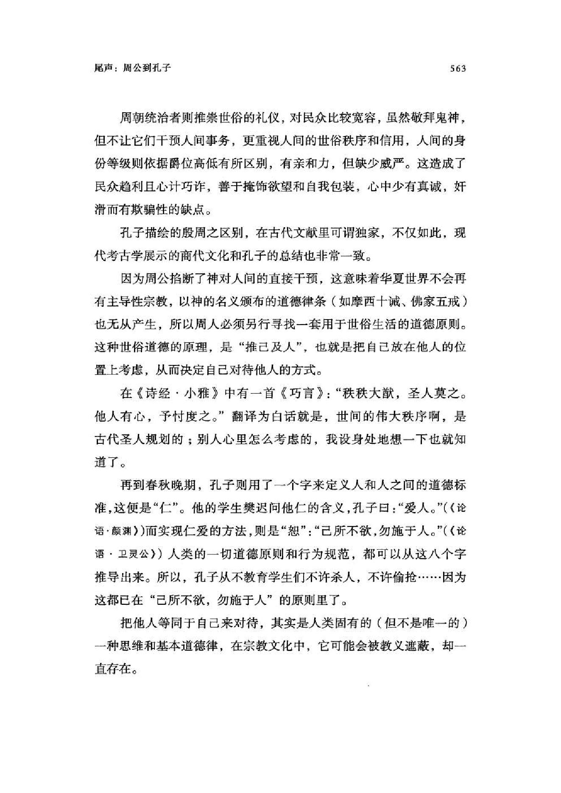
原书阅读器页 578原书物理 PDF 页 576印刷页 564
春秋时，有位晋国贵族韩宣子访问鲁国，参观太史官收藏的典籍，发现其中就有《易象》（应当是《易经》和《象传》的合称）。韩宣子因此感叹：“周礼尽在鲁矣！吾乃今知周公之德，与周之所以王也！”这是周公写作《象传》的间接证据。[[fn:6]] 但另一方面，这一记载也说明，尽管《易象》保存在鲁国朝廷，但并不太普及，哪怕是晋国执政的高级贵族也只是首次见到。
到春秋中后期，已经开始有使用《易经》占算的史料记录，而且还有了其他的卦爻辞版本。比如，有的爻辞里就出现了“千乘”一词，[[fn:7]] 意思是一千辆战车，但在文王的时代，即便商王朝也是很难集中起一千辆战车的，这只能是春秋时期创造的词。
文王《易经》的内容本就很晦涩，所以春秋时期的贵族用它占算时，大都已经不知道或者说不再关注它的本意。其中比较明显的例子就是《易经》中的“贞”字，它的本意是甲骨卜辞中的“占”，但春秋时人却已经将其误解为“贞正”“贞操”之意了：“随，元亨，利贞……弃位而姣，不可谓贞。”（《左传•襄公九年》）
那么，春秋时期的贵族会忘记《易经》中的文王事迹吗？这是个令人疑惑的问题，毕竟，这些贵族多是文王和周公的后裔。后世可以拿来比较的是，明初洪洞大槐树和南京珠矶巷移民的后人也可能已经不记得先祖当年的具体生活经历，保留至今的多是族谱文本中有记载的内容。
如前所述，春秋时期有少许恢复人祭行为的个案，这说明五百年前的风俗记忆仍可以潜流传承。是不是《易经》也造成了某种暗黑记忆的保存？这背后藏着太多我们无法破解的谜团。
孔子破解周公
鲁国执政者季平子用莒人俘虏献祭的那一年，孔子二十岁，正在季平子的采邑里从事基层小吏工作，所以，这次人祭在曲阜造成的恐怖传闻，肯定会对孔子有所影响。
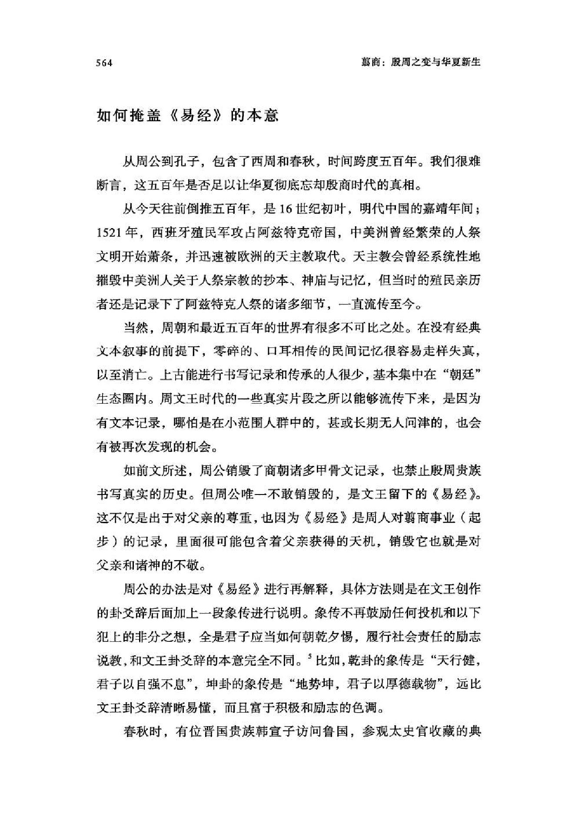
原书阅读器页 579原书物理 PDF 页 577印刷页 565
孔子虽是鲁国人，但他的先祖出自宋国国君家族，所以他是商人后裔。而当孔子从事文献整理与学术工作后，他的身份自然会让他对商周之际的历史产生很大兴趣。
在《论语》和《礼记》里，孔子经常比较殷、周乃至夏三代的文化制度异同，类似什么“殷之大白，周之大赤”等。（《礼记•明堂位》）当然，这些比较的结果自然是，商周制度大同小异。
子曰：“殷因于夏礼，所损益，可知也；周因于殷礼，所损益，可知也；其或继周者，虽百世可知也。”（《论语•为政》）
孔子还说：“周监（鉴）于二代（夏商），郁郁乎文哉！吾从周（《论语•八佾》）这都和周公奠定的官方历史论调完全相同。
但是，前述孔子关于“殷人尊神，率民以事神，先鬼而后礼，先罚而后赏，尊而不亲。其民之敝，荡而不静，胜而无耻”的描述，却又是西周和春秋时期绝无仅有的，不仅不符合周朝官方的政治正确，而且孔子的信息来源也是个谜。
我们至少知道的是，在孔子的春秋时代，上述“殷人”的特征早已经消失。宋国是商王族的继承者，但宋国上层已被周人完全同化，有时固然争强好胜，但主要还是为面子，或者说是周人文化里的“贵族精神”，绝对不是为了利益的“胜而无耻。
以比孔子早一百多年的宋襄公为例，他最著名的事迹是和楚国的“泓之战”。宋襄公风格甚高，不肯攻击正在渡河及未成列的楚国军队，结果惨败，受伤而死，而且死前还振振有词地自我辩护，阐述道义是战争的首要原则：“君子不重伤，不禽二毛。古之为军也，不以阻隘也。寡人虽亡国之馀，不鼓不成列。”（《左传•僖公二十二年》）可见，宋襄公绝对不是“无耻”，而是耻感过分发达。至于崇拜鬼神的程度，宋国人也不比春秋列国更严重。
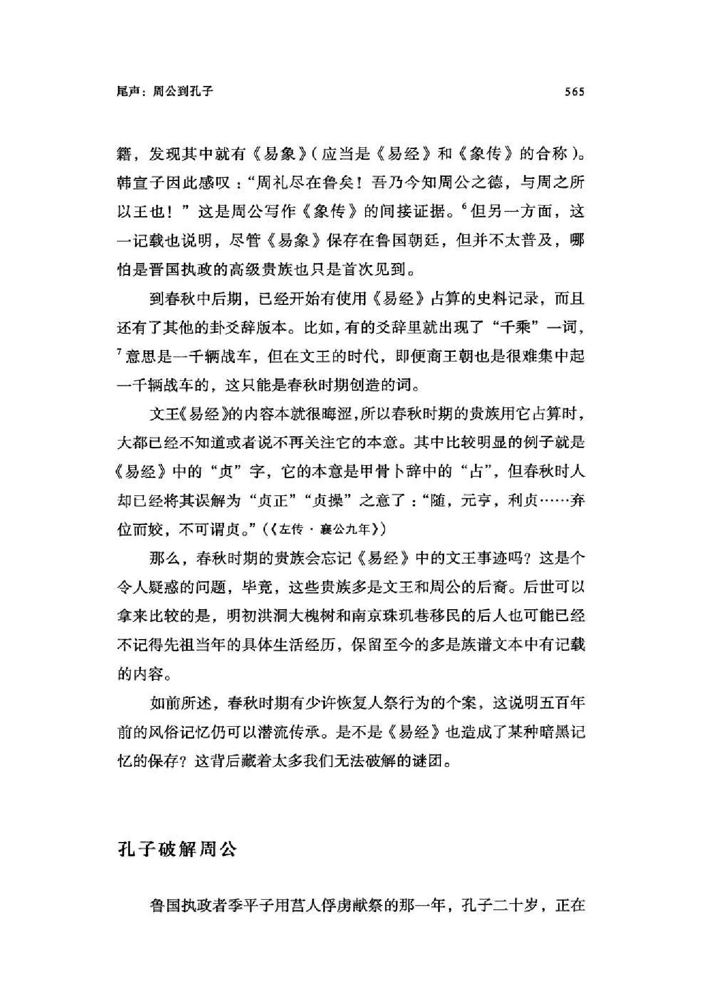
原书阅读器页 580原书物理 PDF 页 578印刷页 566
但前述孔子关于商周文化之别的评价显示，即便是在周公五百年之后，应该也还存在着碎片化的关于商朝的真实历史记忆。考虑到孔子是专职搜集历史文献的学者，待他收集起足够多的关于商朝的碎片化知识后，是有可能逐渐拼合出一些“非官方”版本的真实历史的。
其实，这在《论语》里有些迹象。
在周公版的历史中，商人从没有过残忍的人祭宗教，商朝的灭亡只是因为纣王-帝辛个人的道德堕落，但孔子的学生子贡却试图为纣王“翻案”：
纣之不善，不如是之甚也。是以君子恶居下流，天下之恶皆归焉。（《论语•子张》）
大意是说，纣王的恶行并不像人们传说的那样过分，这就像是一个地方被当成了垃圾场，人们就专门往那里丢垃圾，纣王的形象也是被这样堆积出来的。
在《论语》中，这段话是和子贡为晚年孔子辩护的几段话放在一起的。子贡是孔子晚年最信赖的学生，孔门十哲之一，复姓端木，殷商旧地卫国人，所以很可能也是商人后裔。这么说来，他和孔子可能有遥远的同族亲缘。据此，这师徒二人显然交流过一些官方版之外的商代秘史。子贡这段话被载入《论语》，说明编辑《论语》的孔门弟子认可其权威性。
而孔子很可能就是从《易经》开始探索真实的商代的。从可靠的文献史料看，孔子平生从不关注“算命”问题，也从未给自己或别人占算过命运，不管是用甲骨还是易卦。孔子最常谈论的是诗、书、礼、乐，但他几乎从未对《易经》发表过评论。
然而，到了晚年，孔子却突然对《易经》产生了兴趣，他说：
加我数年，五十以学易，可以无大过矣。
《论语•述而》里的这则记载很可靠，但具体含义有争议。有人将其解读为：“我如果能多活几年，比如五年或十年，用来学习《易经》，就不会有大错误了！”或者：“如果这几年我能重新再来一次，我会从五十岁开始学习《易经》，也就不会有大错误了！”
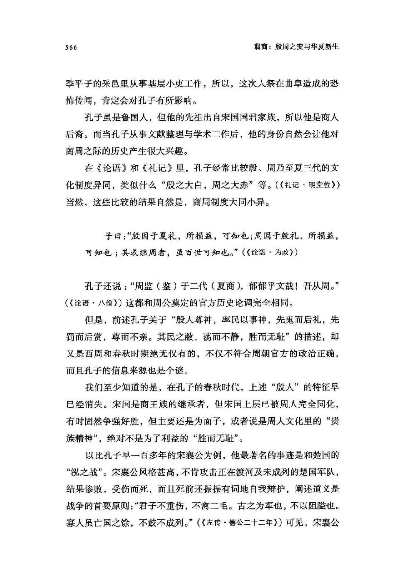
原书阅读器页 581原书物理 PDF 页 579印刷页 567
〔按语：孔二不懂辩证法，一昧复辟。〕
不管是哪种解释，这都是孔子晚年才会有的感慨。《史记》与此相关的记载是，孔子晚年频繁地研读《易经》，结果编竹简的皮条磨损严重，经常断裂，所谓“韦编三绝”。
孔子晚而喜易，序彖、系、象、说卦、文言。读易，韦编三绝。日：“假我数年，若是，我于易则彬彬矣。”（《史记•孔子世家》）
《礼记•礼运》还记载，孔子曾对弟子言偃（子游）说：
我欲观殷道，是故之宋，而不足徵也，吾得《坤乾》焉。
为之做“正义”的唐代学者孔颖达认为，这部《坤乾》是殷商（宋）人版本的易卦占算书，“谓得殷家阴阳之书也”，它的坤卦排在乾卦前面，和《易经》相反，所以称为《坤乾》。
这个说法已经难以验证，但在此之前，孔子肯定有机会读到文王的《易经》。如前所述，韩宣子访问鲁国，“观书于大史氏，见《易象》与鲁《春秋》”，而孔子离开鲁国去宋国，发生在他五十七岁这年，也就是说，从五十岁到五十六岁期间，他一直身处鲁国高层，完全有条件读到官方收藏的周公注解版《易经》。
作为周公后人，鲁国人对《易经》的理解可能非常阳光，完全沿用周公《象辞》的曲解，从而使孔子没有意识到它的史料价值。但当在宋国得到《坤乾》时，孔子却可能会获悉某些保存于《易经》中的真实的商周之际历史，毕竟，作为商人后裔的宋国最有可能保存这种暗黑记忆。
司马迁认为，《易传》里的《系辞》是孔子所作。其实，这应当是孔门弟子记录的孔子观点。《系辞》对《易经》（文王卦爻辞）的来历有个推测，认为它是殷商末期周族兴起时的产物，内容主要是周文王和商纣王交往的事件，所以充满了危机之辞，所谓：
《易》之兴也，其当殷之末世、周之盛德邪？当文王与纣之事邪？是故其辞危。
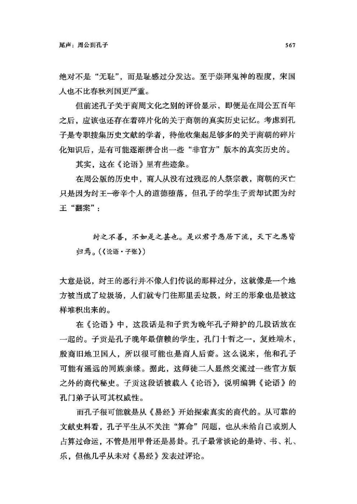
原书阅读器页 582原书物理 PDF 页 580印刷页 568
此外，《系辞》还认为《易经》的作者充满了忧患之情：
作《易》者，其有忧患乎？
这种理解已经很接近真实的文王时期，而和周公的《象辞》很不一致，说明五十七岁之后的孔子已发掘出越来越多当年被周公隐藏的真相（商朝的血祭文化）。但是，孔子没有继续点破真相，而是频繁地翻检《易经》，以至“韦编三绝”。或许，孔子正是想从隐晦而杂乱的文王卦爻辞中复原出尽可能多的内容。
今天的我们对商代的有效知识主要来自出土的遗址和甲骨文，而这只是商代极为有限的局部片段，犹如管中窥豹；而孔子通过收集当时的口述史与文献（孔子能见到的文献要比今天多得多）也同样可以建立起一部分有效知识。因此，孔子对商代的认知和现代人的认知应当存在一些交集，但也会有互不重合的部分。
可以合理推测，孔子应该就是在逐渐认知真实商朝文化的过程中，更加理解了周公当年为何一定要埋葬商朝的真历史而重构一套夏商史。
孔子是商王族后裔，他应该会感念周公给了商人生存的机会，还替他们抹去了血腥人祭的记忆，让子孙后代不必活在羞辱中。周公的这些宽容而伟大的事迹，被他自己掩埋五百年，又终被孔子再次破译。这或许才是他衷心服膺周公的根本原因。
孔子甚至常常梦到周公，而周公本以为武王解梦著称。只有到临终前，孔子才感慨很难梦到周公了：
甚矣吾衰也！久矣吾不复梦见周公。（《论语•述而》）
在传统的历史叙事框架中，孔子梦周公这件事不是那么容易让人理解，甚至有些人还会觉得这是不是有点虚假，但将其放在真实的商周之际的历史背景中就好理解了：越是接近商文化的残酷真相，孔子就越是对周公有真正的理解和感激。换句话说，从民族间的征服与杀戮走向和解与融合，孔子是受益者，也是这段隐秘史的破译者。他有太多想说又不能明说的，只能在梦中倾诉。
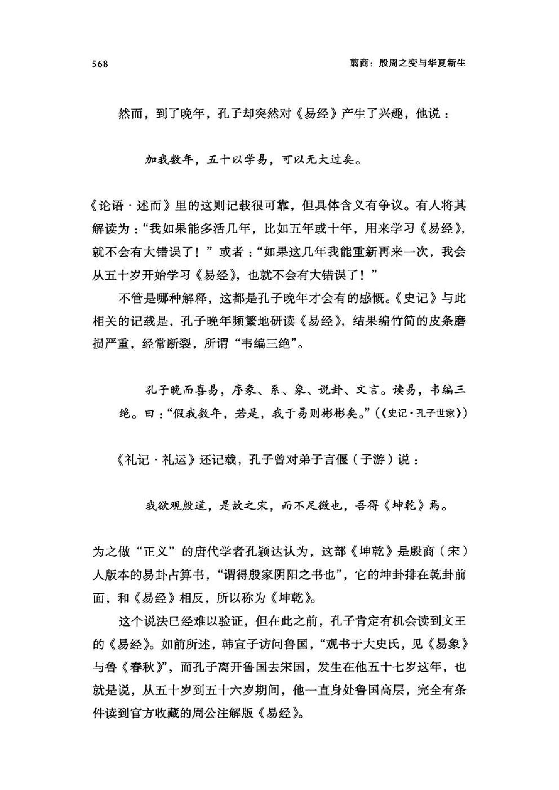
原书阅读器页 583原书物理 PDF 页 581印刷页 569
附录：孔子晚年编辑“六经”
孔子晚年最重大的工作，是编辑儒家经典“六经”。
这是按照周公精神对历史文献进行的一次前所未有的系统整理。“六经”成书后，从上古到孔子时代的历史叙事的权威版本就此诞生，也标志着周公开创新华夏、埋葬旧华夏的工作得以正式完成。而孔子则以此向周公致敬，并参与、发展了周公的事业。
本书目的之一是再现夏商周更迭的历史，所以使用了“六经”中的很多史料素材，但也对有些史料进行了辨析，指出其不可靠或刻意作伪之处。
“六经”具体是指《诗经》《尚书》《仪礼》《乐经》《易经》《春秋》。其中，《诗经》《尚书》《易经》包含大量商周易代时期的史料。在“六经”成书之前，社会上传抄流行的主要是单篇文章，真伪混杂，质量良莠不齐。为此，孔子选择了最可信且符合周公精神的汇编成书，而不符合这两点的篇章就逐渐失传了。
《诗经》记载了周族从姜嫄、后稷以来的多篇史诗，包括周族早期历史、文王确立翦商大计、武王的灭商战争、周公平定三监叛乱以及对商文化的改造等，属于经过周公修订的官方正式版本。
孔子继承周公事业的用心，则主要表现在他对《尚书》的编辑和选裁上。
书是文献之意，《尚书》就是古代的文献。按时间顺序，《尚书》分为《虞书》（尧舜禹时期）、《夏书》、《商书》和《周书》。在收入“六经”之前，《尚书》中各篇都是单行本，基本规律是越古老的越不可信，内容大都是西周及之后的人按照周公重写上古历史的精神，虚构了尧舜禹和夏商时期的很多帝王故事和讲话稿，基本是周公式的道德说教，不具备史料价值。当然，也会有个别真正的商代文献，比如盘庚迁都的讲话稿，内容上和周公精神抵触不大，或者已经被周公授意删削过，所以保留了下来。总之，这些真真假假的篇章被孔子分别收入了《尚书》的《虞书》《夏书》和《商书》部分。
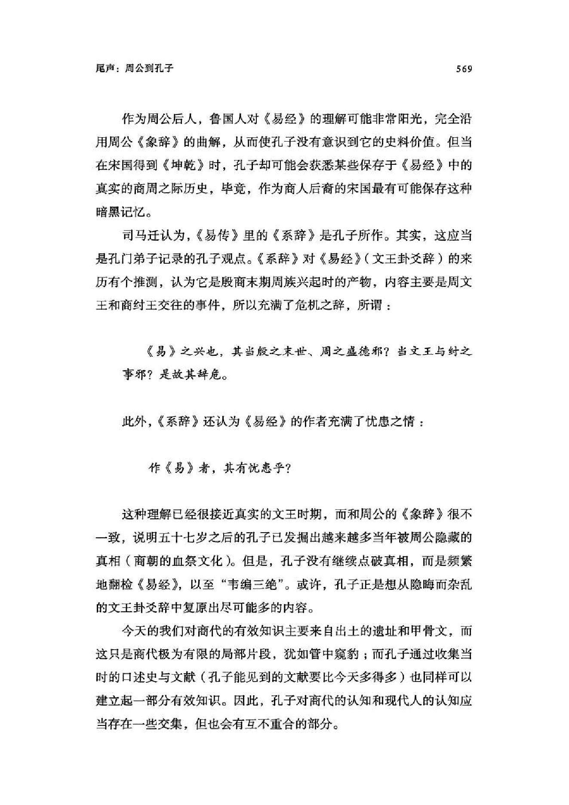
原书阅读器页 584原书物理 PDF 页 582印刷页 570
而《周书》部分，则多数是周朝的官方文献，作伪的成分较少，而且肯定符合周公精神，所以在整部《尚书》里，商末周初这部分占的比重最大。
以上是孔子认为符合周公精神、被收入《尚书》的文稿。此外，在西周朝，还有人写了一些关于商周之际的历史篇章，他们显然部分了解那段真实的历史，但并不完全遵循周公精神，所以和周公版文献很不一样。比如，有些文稿记载，灭商之前的武王生活在对商朝的恐惧之中，经常夜不成寐，需要周公的宽慰，但里面记载的周公的长篇大论有明显的虚构成分，因为兄弟二人的深夜谈话不可能被如实记录下来。还有的文稿记载了武王灭商后曾大量屠杀商人俘虏进行献祭，但关于人祭过程的描写不仅完全符合殷墟甲骨卜辞的记录，而且比卜辞更细致，这显然也不符合周公精神。
这些稍有违背周公精神的历史篇章，并没有被孔子收录进《尚书》，但经过孔门的汇集、抄写和校勘，也形成了一个汇编本，被命名为《逸周书》，意思是“未能收入《尚书•周书》的文献”。开始的时候，《逸周书》可能只保存在孔门内部，只有少数弟子说得清这部离经叛道的书的来历。而到了战国之后，真正的商代历史已经被彻底遗忘，以“六经”为代表的周公版历史成了唯一的存在，所以《逸周书》虽然没有失传，但在此后两千多年的历史里，处境一直比较尴尬，不太受学者重视。只有到现代考古学诞生和商代遗址发掘后，人们这才发现，它的有些内容居然很符合商文化的本来面貌。
至于《易经》，孔子虽然很精准地选择了文王而非春秋时流行的其他版本（如本书所述，文王的《易经》隐含的商末往事很多，周公的《象辞》其实是对文王原意的掩盖和曲解），但却继续奉行周公的原则，在给弟子讲授《易经》时，尽量避开商末的真实历史，重点从《易经》文本引申出宇宙秩序和社会伦理。这些讲授被他的学生整理成《文言》《系辞》《说卦》《序卦》等篇章，与周公《象传》合编在一起，被称为《易传》（对《易经》的解释）。[[fn:8]] 文王的《易经》和之后的《易传》，则被后人合称为《周易》。因此，要还原文王时代的历史，必须研究文王《易经》本身，而非《易传》，这样才能避免周公和孔子刻意制造的误导。
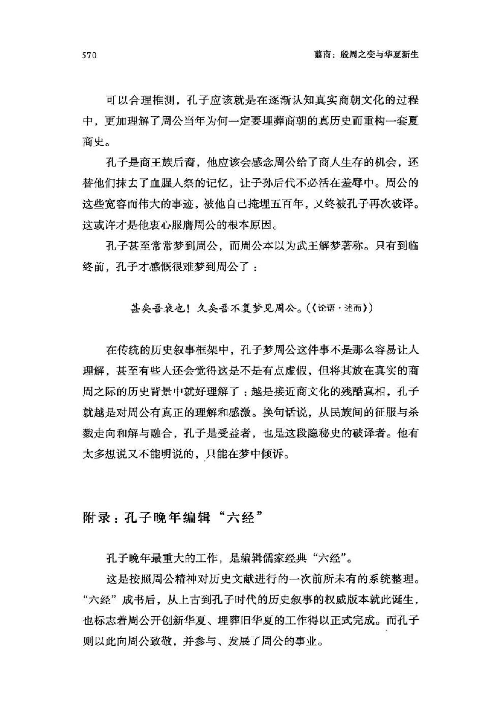
原书阅读器页 585原书物理 PDF 页 583印刷页 571
在孔子生活的春秋时代，周王室早已丧失权威，诸侯列国并不真正关心所谓文化建设或王朝合法性问题，编辑“六经”可以说完全是孔子个人的追求，但此举确实继承了周公的事业，实现了周公的目的：掩埋真正的商文化，用重构的道德历史建构华夏文明起源。
周公在事实上扭转了历史进程，改变了人们的认知；孔子则把这一切文本成果汇总起来，形成盖棺定论的“六经”经典，传递给后世：华夏文明的源头就是如此，再无其他。
当然，孔子编辑“六经”的作用不止于此，其中还保存了从西周创立直到孔子时代的文化成果，这就是周人贵族社会的诗歌（《诗经》）、礼俗（《仪礼》）和历史（《春秋》）。
可以说，“六经”是截至孔子时代的符合周公精神的华夏世界社会历史知识的总集，不仅是儒家学派的基石，也是传统时代的人们了解商周及更早时代的几乎唯一信息源。换句话说，“六经”决定了华夏新文明独有的内核与特质，是华夏新文明的源代码。孔子时代尚还保留着一些关于真实商文化的口传记忆，但到战国初年，伴随着各国的变法运动，贵族社会逐渐瓦解，新的集权君主制和官僚制国家机器建立了起来，而在这巨大的社会动荡和重组中，即便稍有文化的人也都只能忙于适应大变革，无人会留心渺茫的上古历史传说。就这样，有关商文化的残余记忆终于彻底失传。
战国时期的诸子百家争鸣，还曾先后出现道、墨、法、名、兵等学派，但它们所拥有的古典知识根本无法和儒家相提并论，何况其对上古历史的认识也只能来自儒家“六经”，因此，即使对儒家理论有所不满，也无法脱离儒家知识走太远。
概而言之，周公时代变革的最大结果，是神权退场，这让中国的文化过于“早熟”；战国时代变革的最大结果，是贵族退场，这让中国的政治过于“早熟”。而在其他诸人类文明中，神权和贵族政治的退场，都发生在公元1500年之后的所谓近现代时期。
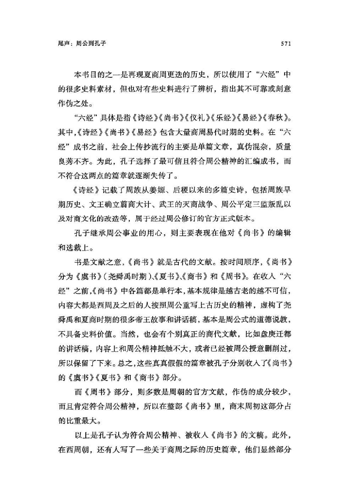
原书阅读器页 586原书物理 PDF 页 584印刷页 572
周公和孔子的努力维持了两三千年，直到考古学家的铲子挖出夏、商遗址，被“六经”等古文献掩盖和误读的历史真实，才得到重新诠释与复原。
我们被考古学改变的认知，不只是夏商。
注释
1杜勇：《尚书•周初八诰研究》，中国社会科学出版社，1998年，第206页。另，在《尚书•盘庚》中，盘庚的发言中也有“天命”，但陈梦家认为，“商人称‘帝命’，无作天命者，天命乃周人之说法……此亦战国宋人之拟作”。参见陈梦家《尚书通论》，中华书局，1985年，第207页。本书认为，《盘庚》中的“天命”可能有西周之后的改动，但该文主体仍是盘庚时代的作品。
2周公这方面的理论主张在《尚书•无逸》篇中体现较多。
3按后世孔孟儒家的学说，能够完成这种角色的王者，就是“圣人”。在周公时代的文献中，“圣”字出现得还不多，在《尚书•多方》篇中，成王云“惟圣罔念作狂，惟狂克念作圣”，但其含义较模糊。
4《礼记•表记》。这里区分了鬼和神，鬼指死者（先祖）的魂灵，神指上帝等至高神或自然神。
5“象传”分大、小两种，解释卦辞的是“大象传”，解释爻辞的是“小象传”。此外，还有一种解释卦辞的“彖传”很可能也是周公所作。
6《左传•昭公二年》：（韩宣子访问鲁国）观书于大史氏，见《易象》与鲁《春秋》，曰：“周礼尽在鲁矣！吾乃今知周公之德，与周之所以王也！”关于《易传•象传》的作者，史书有不同说法，《史记》认为是孔子所作。参见李学勤《周易经传溯源》，长春出版社，1992年，第46页。
7秦国占卜师卜徒父说：“其卦遇《蛊》，曰：‘千乘三去，三去之余，获其雄狐。' 乃大吉也！ ”这里引用的卦爻辞不属于文王《易经》。参见《左传・僖公十五年》。
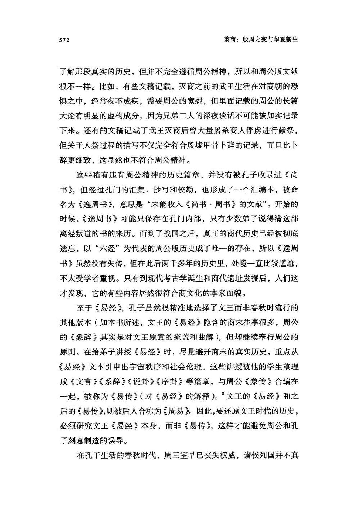
原书阅读器页 587原书物理 PDF 页 585印刷页 573
8《史记•孔子世家》说，孔子晚年为《易经》撰写了很多种注解，所谓《十翼》或《易传》。但司马迁这个说法有些问题，因为《十翼》并不都是孔子所写，如《象传》和《彖传》可能是周公作品。其他篇章里常出现“子曰”，孔子自己肯定不会这样写，它们应当是孔门弟子编写的。《周易》经传的详细知识，可参考廖明春《周易经传十五讲》，北京大学出版社，2012年。
[[editor-fn:1]]
〔编者注1〕此版主要对生僻字注音，其余不予考虑，凡有注释均为系统测试。
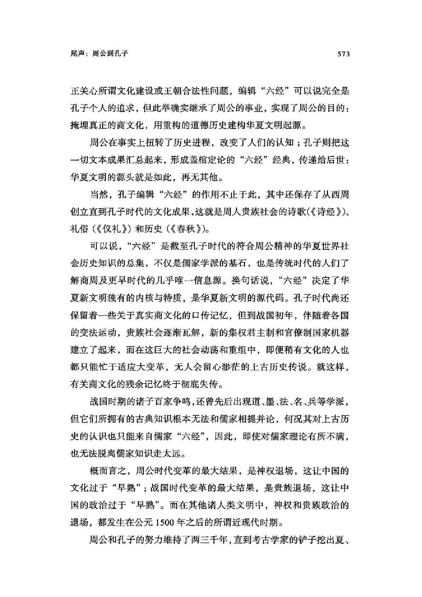
原书阅读器页 588原书物理 PDF 页 586印刷页 574
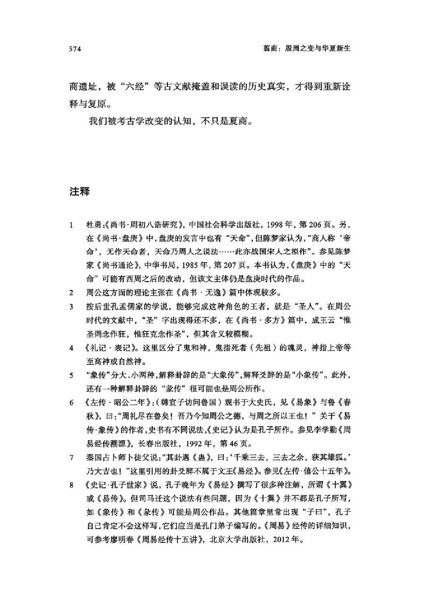
编辑札记
标记
先在正文中选择文字，再输入拼音；可用“拼音；简注”。